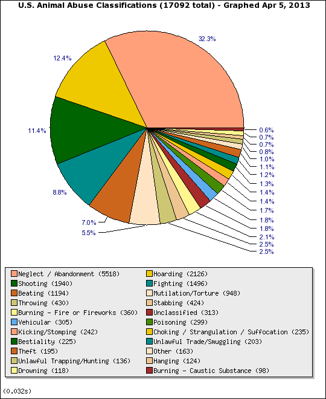

1. Only 1 out of every 10 dogs born will find a permanent home.
2. The main reasons animals are in shelters: owners give them up, or animal control finds them on the street.
3. Homeless animals outnumber homeless people 5 to 1.
4. Each year, approximately 2.7 million dogs and cats are killed every year because shelters are too full and there aren’t enough adoptive homes. Act as a publicist for your local shelter so pets can find homes. Sign up for Shelter Pet PR.
br/>
5. Approximately 7.6 million companion animals enter animal shelters nationwide every year. Of those, approximately 3.9 million are dogs and 3.4 million are cats.
6. According to the National Council on Pet Population Study and Policy (NCPPSP), less than 2% of cats and only 15 to 20% of dogs are returned to their owners.
7. 25% of dogs that enter local shelters are purebred.
8. About twice as many animals enter shelters as strays compared to the number that are relinquished by their owners.
9. It’s impossible to determine how many stray dogs and cats live in the United States. Estimates for cats alone range up to 70 million.
10. Only 10% of the animals received by shelters have been spayed or neutered. Overpopulation, due to owners letting their pets accidentally or intentionally reproduce, sees millions of these “excess” animals killed annually.
12. Many strays are lost pets that were not kept properly indoors or provided with identification.